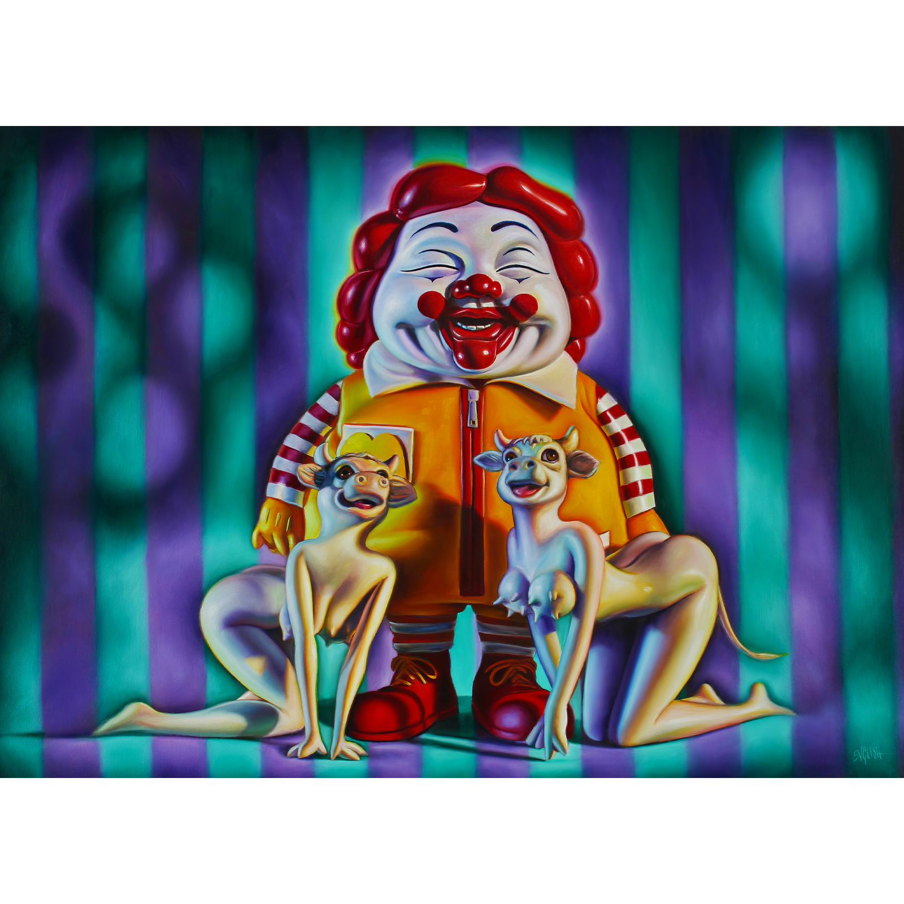

Literature
Ron English, Abject Expressionism: The Art of Ron English (San Francisco: Last Gasp, 2007), p. 31. ISBN 978-0867196894.
Notes
This work references Ronald McDonald.
The composition was later reproduced as a poster titled M. C. Supersize and the Cowgirl Posse.
Ancillary Documentation
The following materials document source imagery and a poster reproduction of the composition.


Selected Online Circulation
Selected examples of the work’s online circulation, reproduction, or discussion. This list is not exhaustive; it is intended to document representative appearances of the image beyond formal exhibition and publication records.
Ron English : une marque de fabrique
· My Brand Friend
Cómo comenzar a hacer crítica de arte con las obras de Ron English
· Cultura Colectiva
Interview: Ron English
· owl and bear
15 Captivating Works Of Art That Challenge The McDonaldization Of Society
· HuffPost
The Don Gallery, street art a go-go
· GlobArtMag
Figurem blog post
· Naver Blog